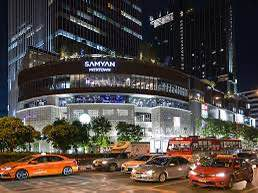

Core engine
Chula students + office workers + transit flow keep turnover high and options fresh.
Chula students + office workers + transit flow keep turnover high and options fresh.
Monthly rhythm
Use Yaowarat as a familiar anchor, then test one new close-to-home spot each month.
Use Yaowarat as a familiar anchor, then test one new close-to-home spot each month.
Friction logic
When weather is rough, prioritize MRT-linked errands and mall-based resets.
When weather is rough, prioritize MRT-linked errands and mall-based resets.


 Samyan MitrtownThe area’s utility core: transit, errands, late-hour fallback.
Samyan MitrtownThe area’s utility core: transit, errands, late-hour fallback. Yaowarat orbitYour known monthly anchor: high-reward food and atmosphere.
Yaowarat orbitYour known monthly anchor: high-reward food and atmosphere.